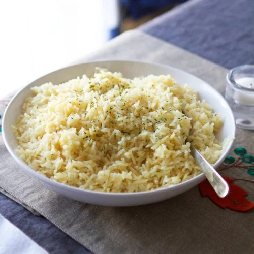

Andrew's Butter Rice

Description
Andrew's Butter Rice was first created in 2020 during the Covid-19 Pandemic. Andrew wanted to create a butter rice to pair with his world famous steak preperation.
It is made with individual servings of rice, water, vegetable oil, salt, pepper, butter, chicken cube and of course, love.
Ingredients
- Rice 1 cup
- Water 2 cups
- 1 healthy pour of vegetable oil
- 1 healthy pour of salt
- 1 healthy pour of pepper
- Butter 1 TSP
- Love 1 heap
Steps
- Add 1 cup of rice to pot
- Add 2 cups of water to pot
- Add one healthy pour of each: vegetable oil, salt, pepper
- Place pot on burner until boiling
- After boiling, let simmer for 15-20 minutes
- Cut 1 TSP stick of butter into rice and mix